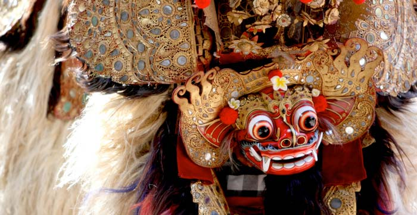

Tari Barong Ubud
Salah satu objek wisata di Bali yang patut anda kunjungi selama liburan di pulau dewata adalah desa Ubud. Ada beberapa alasan kenapa kami merekomendasi anda untuk berwisata ke Ubud. Hal ini di karenakan, tempat wisata di Ubud memiliki berbagai macam pilihan tempat wisata, baik untuk wisata alam, wisata budaya dan wisata seni, khususnya seni lukis dan seni tari seperti tari Barong Ubud.
Ubud sangat terkenal akan wisata alam seperti aktivitas rafting di sungai Ayung Ubud, wisata ke museum seni lukis atau menonton pertunjukan seni tari, yang hampir setiap hari diadakan di berbagai tempat di objek wisata Ubud.
Saking terkenalnya objek wisata Ubud, baik di kalangan wisatawan domestik dan wisatawan mancanegara, membuat Ubud tidak pernah sepi dari kunjungan wisatawan setiap harinya. Hal ini membuat objek wisata Ubud memiliki begitu banyak sarana pariwisata, terutama tempat menginap, baik dari hotel maupun villa.
Para pengusaha travel agent di Bali, juga berlomba menawarkan berbagai macam paket wisata, yang menfokuskan akan paket liburan di Ubud Bali. Kami juga tidak ketinggalan dalam menawarkan paket liburan ke Ubud. Tentunya setiap wisatawan yang berlibur di Bali tidak semua memilih untuk membeli paket wisata ke Ubud, ada banyak wisatawan yang juga memilih untuk wisata di Ubud tanpa membeli paket wisata.
Sebagian dari mereka dalam berwisata di Ubud tentunya akan memerlukan sarana tranfortasi, dan wisatawan sebagian besar akan mengunakan jasa sewa mobil dan driver di Bali. Dengan alasan murah dan tidak perlu memikirkan tempat parkir dan jalanan macet.
Pertunjukan Kesenian Tari Barong Ubud
Saat anda wisata di Bali, tentunya anda tidak hanya ingin diam di hotel atau menghabiskan waktu ke shoping mall, tanpa melihat sesuatu yang unik dan hanya ada di Bali, seperti pertujukan kesenian khas tradisional budaya Bali. Salah satu pertunjukan seni yang paling di cari di Ubud adalah pertunjukan tari Barong Ubud dan tari kecak Ubud.
Tarian Barong sebuah kesenian tari tradisional di Bali, yang sebagian penarinya menggunakan topeng dan kostum yang menyerupai hewan. Jenis tari Barong yang paling banyak di minati adalah tari Barong Ket. Lalu apa itu Barong Ket?
Jika di lihat dari bentuknya, Barong Ket merupakan perpaduan bentuk binatang antara harimau, singa, ular naga dan sapi. Seluruh badan dari Barong Ket, dihiasi dengan ukiran tradisional Bali yang berbahan dasar kulit sapi dan dalam ukiran tersebut terdapat puluhan cermin kaca yang berukuran kecil.
Jadi pada saat ada cahaya yang mengenai cermin kaca, membuat wujud dari Barong kelihatan berkilauan. Untuk membuat tampak seperti bintang, maka di Barong Ket anda akan melihat banyak Bulu. Bulu ini terbuat dari serat daun tanaman yang dikeringkan dan biasanya mengunakan daun pandan dan ijuk
Untuk menarikan Barong Ket diperlukan dua orang penari, kedua penari ini memiliki nama Juru Bapang atau sering juga disebut dengan nama Juru Saluk. Penari di bagian kepala Barong di namai Juru Bapang satu dan penari yang di bagian ekor dinamai Juru Bapang dua. Tentunya pada saat pementasan tarian Barong Ket, juga disertai pementasan tarian Rangda.
Rangda adalah sebuah sosok yang kelihatan sangat seram, karena di gunakan untuk mewakili simbul keburukan. Sedangakan Barong Ket adalah sibul kebajikan. Oleh karena itu, setiap pementasan tarian Barong Ket, pastinya akan ada pementasan Rangda. Hal ini meyimbulkan perbedaan abadi antara kebajikan dan keburukan.
Untuk mengiringi tari Barong di Ubud digunakan musik traditional Bali yang disebut dengan nama Gambelan. Jenis Gambelan yang digunakan adalah Gamelan Semar Pegulingan. Bagi yang pertama kali mendengar musik Gambelan Semar pegulingan, pastinya akan terdengar aneh di telinga, tapi setelah anda melihat penari yang bergerak mengikuti irama musik Gambelan, anda pastinya akan terbiasa.
Apakah Di Anjurkan Menonton Bersama Anak?
Jika anda liburan di Bali bersama keluarga dan anak-anak, sebelum memutuskan untuk menonton tari Barong Ubud, sebaiknya anda tanyakan dulu kepada anak, apakah mereka berani untuk menonton tari Barong Ubud atau tidak? Caranya dengan menunjukan contoh tarian Barong Ubud melalui media internet di Youtube. Dengan cara ini anda akan tahu, apakah anak anda berani menonton tari barong atau tidak. Jika anak anda tidak berani, maka anda tidak rugi telah membayar tiket masuk tari Barong Ubud, kemudian harus meninggalkan pertujukan tarian barong karena anak anda tidak berani menonton.
Jika anda liburan di Bali bersama keluarga dan anak-anak, sebelum memutuskan untuk menonton tari Barong Ubud, sebaiknya anda tanyakan dulu kepada anak, apakah mereka berani untuk menonton tari Barong Ubud atau tidak? Caranya dengan menunjukan contoh tarian Barong Ubud melalui media internet di Youtube. Dengan cara ini anda akan tahu, apakah anak anda berani menonton tari barong atau tidak. Jika anak anda tidak berani, maka anda tidak rugi telah membayar tiket masuk tari Barong Ubud, kemudian harus meninggalkan pertujukan tarian barong karena anak anda tidak berani menonton.
Jadwal Tari Barong Di Ubud Bali
Untuk pementasan tari Barong Ubud, tidak setiap hari diadakan, bagi yang ingin menonton tari barong yang diadakan setiap hari, maka anda harus menonton di daerah Batubulan. Untuk jadwal pementasan tarian Barong Ubud, dapat anda lihat di tabel di bawah.
| Hari | Lokasi | Jam | Harga Tiket |
| Senin | Sandi Swara Wantilan | 19.00 - 20.30 | Rp 75.000 |
| Rabu | Puri Saren Ubud | 19.30 - 21.00 | Rp 80.000 |
| Kamis | Pura Dalem Ubud | 19.30 - 21.00 | Rp 50.000 |
| Jumat | Puri Saren Ubud | 19.30 - 21.00 | Rp 80.000 |
Catatan: Harga Tiket Pertunjukan Tari Barong Di Ubud, Sewaktu-waktu Dapat Berubah.
Jika anda ingin menonton tarian Barong di Bali dan tidak berencana sebelumnya, sebaiknya tanyakan terlebih dahulu mengenai lokasi pementasan dan harga tiket ke supir yang mengantar anda atau melalui media informasi yang disediakan di tempat anda menginap.